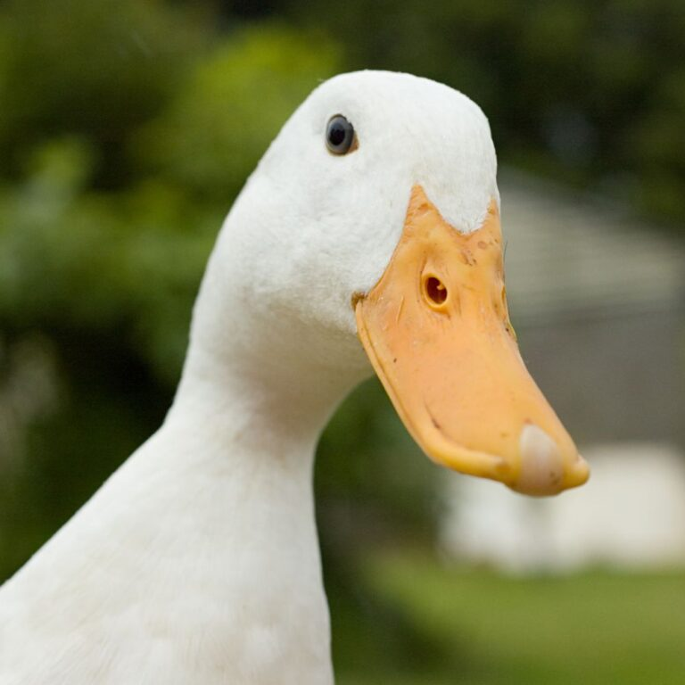
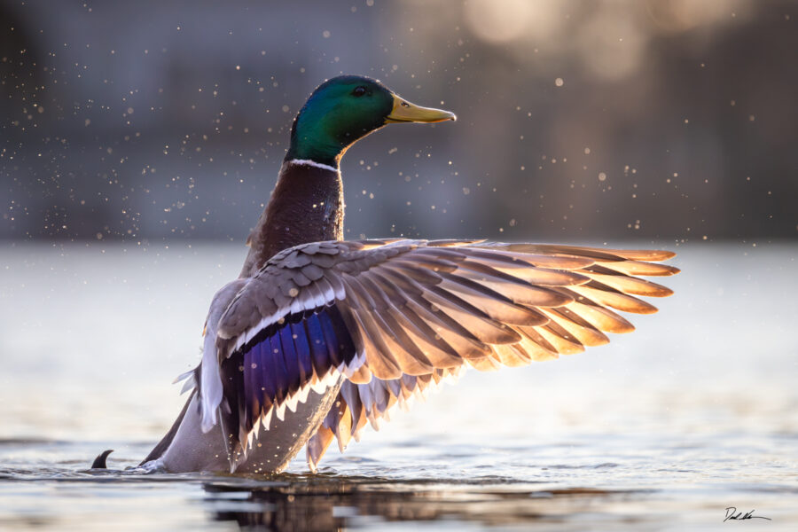

Basic information

duck, any of various species of relatively small, short-necked, large-billed waterfowl. In true
ducks—i.e., those classified in the subfamily Anatinae in the waterfowl family Anatidae—the legs are
placed rearward, as in swans, rather than forward, as in geese. The result is a distinctive waddling
gait. Most true ducks, including a few inaccurately called geese (e.g., sheldgeese) by reason of
size and build, also differ from swans and true geese in the following characteristics: males
(drakes) and females (hens or ducks) exhibit some degree of differentiation in plumage and in call,
males molt twice annually, females lay large clutches of smooth-shelled rather than rough-shelled
eggs, and both sexes have overlapping scales on the skin of the leg. The wild mallard (Anas
platyrhynchos) is believed to be the ancestor of all domestic ducks, and it has undergone numerous
crossbreedings and mutations since it was first domesticated in China between 2,000 and 3,000 years
ago.
Mandarin duck (Aix galericulata), an Asian perching duck.
1 of 4
Mandarin duck (Aix galericulata), an Asian perching duck.
mallard
2 of 4
mallardMallard (Anas platyrhynchos).
wigeon
3 of 4
wigeonEuropean wigeon (Anas, or Marcea, penelope).
northern shoveler (Anas clypeata)
4 of 4
northern shoveler (Anas clypeata)A male northern shoveler (Anas clypeata) in flight.
All true ducks, except those in the shelduck group (the tribe Tadornini) and sea ducks (the tribes
Mergini and Somateriini), mature in the first year and pair only for the season—unlike the
late-maturing, life-mating true geese and swans. Ducks are generally divided into three major
groups, dabbling (shallow-water), diving, and perching ducks, based on their characteristic
behaviours. The mallard, a typical dabbling duck (any of about 38 species of Anas and about 5
species in other genera), is one of the most popular game birds.
northern pintail (Anas acuta)
northern pintail (Anas acuta)A northern pintail (Anas acuta) standing near the edge of a pond.
Pintails, teals, shovelers, and wigeons are also dabbling ducks classified in Anas, in addition to
the gadwall (A. strepera) and the black ducks (A. sparsa, A. rubripes, and A. superciliosa).
Perching ducks such as the muscovy (Cairina moschata), the wood duck (Aix sponsa), and the mandarin
duck (Aix galericulata) have long claws and are the most arboreal of ducks, often roosting in trees.
The diving ducks (or sea ducks) include the greatest number of marine species, such as eiders (which
are variously classified as members of the tribe Mergini or placed in a separate tribe Somateriini)
and scoters (Melanitta), but they also include primarily freshwater species such as mergansers
(Mergus and Lophodytes), the ring-necked duck (Aythya collaris), and the pochards (Aythya and
Netta), including the scaups (A. marila, A. affinis, and A. novaeseelandiae) and the canvasback (A.
valisineria). The redhead (A. americana), the goldeneye (Bucephala clangula and B. islandica), and
the bufflehead (B. albeola) are diving ducks that live in fresh and salt water, depending on the
season. Members of the stifftail group, typified by the blue-billed ruddy duck (Oxyura jamaicensis),
are highly aquatic diving ducks characterized by legs set far toward the rear of the body. The
whistling ducks (Dendrocygna), also called tree ducks, are not true ducks but are more closely
related to geese and swans. Ducks that are not included in those larger groups are the freckled duck
(Stictonetta naevosa) and the torrent duck (Merganetta armata), as well as the shelducks (Tadorna)
and the steamer ducks (Tachyeres). All ducks, geese, and swans belong to the family Anatidae. For a
more detailed classification, see anseriform.
Sea otter (Enhydra lutris), also called great sea otter, rare, completely marine otter of the
northern Pacific, usually found in kelp beds. Floats on back. Looks like sea otter laughing.
saltwater otters
Britannica Quiz
Animal Group Names
Duck raising is practiced on a limited scale in most countries, usually as a small-farm enterprise,
although large flocks are bred in some areas of England, the Netherlands, and the United States. The
American Poultry Association lists 17 domesticated breeds, divided into four classes: heavy, medium,
lightweight, and bantam. The White Pekin, originally from China, is the most widely raised duck in
the United States, because it is meaty, fast growing, and prodigious in egg production. Duck
feathers are also of some value, though they have been largely replaced by synthetics. Eiderdown,
the down feathers of the common eider (Somateria mollissima), are still of wide commercial value for
use in luxury quilts and pillows.
Behaviour

Feeding:
Pecten along the bill
Mallard duckling preening
Ducks eat food sources such as grasses, aquatic plants, fish, insects, small amphibians, worms,
and small molluscs.
Dabbling ducks feed on the surface of water or on land, or as deep as they can reach by
up-ending without completely submerging. Along the edge of the bill, there is a comb-like
structure called a pecten. This strains the water squirting from the side of the bill and traps
any food. The pecten is also used to preen feathers and to hold slippery food items.
Diving ducks and sea ducks forage deep underwater. To be able to submerge more easily, the
diving ducks are heavier than dabbling ducks, and therefore have more difficulty taking off to
fly.
A few specialized species such as the mergansers are adapted to catch and swallow large fish.
The others have the characteristic wide flat bill adapted to dredging-type jobs such as pulling
up waterweed, pulling worms and small molluscs out of mud, searching for insect larvae, and bulk
jobs such as dredging out, holding, turning head first, and swallowing a squirming frog. To
avoid injury when digging into sediment it has no cere, but the nostrils come out through hard
horn.
The Guardian published an article advising that ducks should not be fed with bread because it
damages the health of the ducks and pollutes waterways.
Breeding:
A Muscovy duckling
Ducks generally only have one partner at a time, although the partnership usually only lasts one
year. Larger species and the more sedentary species (like fast-river specialists) tend to
have pair-bonds that last numerous years. Most duck species breed once a year, choosing to
do so in favourable conditions (spring/summer or wet seasons). Ducks also tend to make a nest
before breeding, and, after hatching, lead their ducklings to water. Mother ducks are very
caring and protective of their young, but may abandon some of their ducklings if they are
physically stuck in an area they cannot get out of (such as nesting in an enclosed courtyard) or
are not prospering due to genetic defects or sickness brought about by hypothermia, starvation,
or disease. Ducklings can also be orphaned by inconsistent late hatching where a few eggs hatch
after the mother has abandoned the nest and led her ducklings to water.
Communication
Female mallard ducks (as well as several other species in the genus Anas, such as the American
and Pacific black ducks, spot-billed duck, northern pintail and common teal) make the classic
"quack" sound while males make a similar but raspier sound that is sometimes written as
"breeeeze",[self-published source?] but, despite widespread misconceptions, most species of
duck do not "quack". In general, ducks make a range of calls, including whistles, cooing,
yodels and grunts. For example, the scaup – which are diving ducks – make a noise like "scaup"
(hence their name). Calls may be loud displaying calls or quieter contact calls.
A common urban legend claims that duck quacks do not echo; however, this has been proven to be
false. This myth was first debunked by the Acoustics Research Centre at the University of
Salford in 2003 as part of the British Association's Festival of Science. It was also
debunked in one of the earlier episodes of the popular Discovery Channel television show
MythBusters.
Predators:
Ringed teal
Ducks have many predators. Ducklings are particularly vulnerable, since their inability to fly
makes them easy prey not only for predatory birds but also for large fish like pike,
crocodilians, predatory testudines such as the alligator snapping turtle, and other aquatic
hunters, including fish-eating birds such as herons. Ducks' nests are raided by land-based
predators, and brooding females may be caught unaware on the nest by mammals, such as foxes, or
large birds, such as hawks or owls.
Adult ducks are fast fliers, but may be caught on the water by large aquatic predators including
big fish such as the North American muskie and the European pike. In flight, ducks are safe from
all but a few predators such as humans and the peregrine falcon, which uses its speed and
strength to catch ducks.